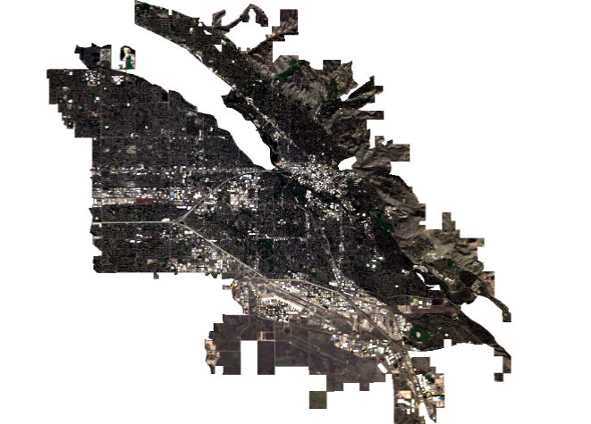

3 Corrections and Enhancements
3.1 Content Summary
The content about corrections for week three comes mostly from the lecture. Four types of image corrections were covered this week: geometric, atmospheric, orthorectification, and radiometric calibration. Geometric Correction involves assigning known ground control locations via regression analysis to a remotely sensed image that does not have a geographic reference system. Atmospheric correction relates to removing blurring in an image caused by light scattering and absorption, either relatively or absolutely. Orthorectification looks to transform an image from the view of a sensor to the view of a map. This involves correcting the value of each pixel by assigning it a nadir view value. Radiometric Calibration involves converting digital numbers (specific to each sensor) that measure the brightness of each pixel into spectral radiance values which measure how much light a sensor picks up for each pixel at a certain band or wavelength.
These corrections are vital to a productive remote sensing project, and because of that, most sources of R.S. data will provide pre-corrected images for download. Despite the importance of these processes that create usable imagery, in practice, image enhancements like ratios and filters are more pertinent to relevant remote sensing outputs. Ratio enhancements make use of different spectral signatures across bands to highlight areas of bare soil, healthy vegetation, developed land, etc. Filter enhancements allow the smoothing (low pass) or sharpening (high pass) to diminish or enhance variance across pixels.


The most important utility of both image corrections and enhancements is the ability to specify a general image into a more objective means of data collection. Despite this, when considering large areas many enhancements like filtering, PCA, and texturing can be computationally intense. Given that this is my third RS based class, I am quite confident in my understanding of corrections and ratio enhancements, but I found that my understanding of corrections in particular was not clear until I participated in the process. Personally calculating DNs to spectral radiance and applying ground control points to an image helped me understand the concepts of nadir, azimuth, TOA reflectance, radiance, etc. In effect I see pre-corrected data as a great disseminator of RS potential, but also as an obstructor of true understanding.
3.2 Applications
3.2.1 Articles
The articles I wanted to include this week relate to parts of the practical that I spent the most time working on, ratio and filter enhancements. The first paper by Son Le, Liou, and Pham (2023) uses Landsat imagery and a fairly complex ratio to analyze surface water presence to analyze both potential water scarcity and disease presence in rice fields in Vietnam. The ratio is called the normalized difference latent heat index (NDLI) and it is obtained from this equation:
\(NDLI = [Green - Red]/[Green + Red + SWIR]\)
The utility of this ratio was tested against another common method to assess rice crop health and water supply known as SEBAL or surface energy balance algorithm for land. In brief summary, the NDLI (particularly in conjunction with surface temperature measurements) was able to more clearly detect water, vegetation, soil, and tidal regions than the more common SEBAL method. This led to more accurate and proactive analysis of the health of the rice paddies.
The second paper by Chen et al. (2022) uses drone/plane imagery and a bilateral filtering technique to balance smoothing and sharpness in images plagued by noise. The first filter is a standard low pass filter with a large kernel width that smooths edges and reduces the effect of “erratic noise” (page 1). The second filter is also a low pass, but with a much smaller kernel width which takes the now reduced-noise-free image and reshapes the edges that we lost in the first pass.
The strength of this method is tested against other bilateral filters that only pass one time. In short, the two pass filter produced images that were both free of noise and had sharp edges where pixel variance was high (something missing from the other methods). Notably though, the authors do highlight the increased computation time of the two pass filters.
3.2.2 Thoughts
The main theme that I see in this research is that, although both paper describe a notable improvement in an RS method, they are not trying to reinvent the wheel or completely change our way of thought. Son Le, Liou, and Pham (2023) still focus on well known ratio methods, they just find a better one for their situation. equally, Chen et al. (2022) apply known filtering methods, just with an improvement. Even in the lecture we saw that dark object subtraction was under some scrutiny, not because it’s pointless, but because other methods are better and just as simple to implement.
3.3 Reflection
In the previous section, much of the covered topics reflect the more objective utility of remote sensing as a tool for scientific output, and this is incredibly important. However, a part of the lecture and practical that I haven’t touched on yet seems most relevant to this section: the blurring of RS from science into art. From the beginning, the display of an image is key to the understanding of effectively every process covered so far. The goal of corrections is to display the image as true to the materials captured as possible, the point of ratios is to display where certain attributes are most prominent, textures allows us to display certain features with an emphasis on their importance to out use case, and even a simple false color composite changes the understanding of an image by changing the display. To me, it seems that the visual nature of remote sensing makes the processes one decides to use in a project inherently subjective. The overarching goal change from, how do I share my findings, to, how can I show my findings? With that said, I found that the R studio code for the practical to be incredibly simple to follow. Even for seemingly complex tasks like the texture analysis, the numerous RS specific libraries made any code block more than 3 lines long quite rare. On top of that, using simple raster plots allowed me to play around with different compost images and ratio thresholds to, again, think about how I would display my findings in a certain project.